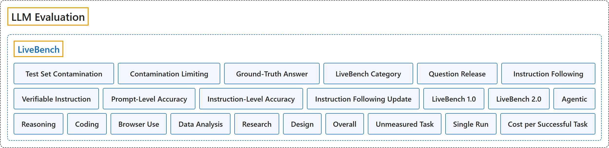

LiveBench
Classification

Glossary
| Term | Definition | 中文翻译 | Source |
|---|---|---|---|
| LiveBench LiveBench |
"Introducing LiveBench: a benchmark for LLMs designed with test set contamination and objective evaluation in mind." | 介绍 LiveBench：一个面向 LLM 的基准，设计时考虑了测试集污染与客观评测。 | LiveBench, n.d.-a, "Introduction", para. 1 |
| Test Set Contamination 测试集污染 |
(Summary) The case in which a benchmark's test data ends up in the training set of a newer model, which can make a benchmark unfair and soon obsolete. | （概述）基准的测试数据进入了较新模型的训练集，会让基准失去公平、很快过时。 | White et al., 2024, Abstract |
| Contamination Limiting 限制污染 |
(context) "LiveBench is designed to limit potential contamination by releasing new questions monthly, as well as having questions based on recently-released datasets, arXiv papers, news articles, and IMDb movie synopses." | （语境）LiveBench 的设计通过每月发布新题来限制潜在的污染，同时题目取材于新近发布的数据集、arXiv 论文、新闻文章和 IMDb 电影梗概。 | LiveBench, n.d.-a, "Introduction", list item 1 |
| Ground-Truth Answer 标准答案 |
(context) "Each question has verifiable, objective ground-truth answers, allowing hard questions to be scored accurately and automatically, without the use of an LLM judge." | （语境）每道题都有可验证的、客观的标准答案，使难题也能准确而自动地评分，不必使用 LLM 评审。 | LiveBench, n.d.-a, "Introduction", list item 2 |
| LiveBench Category LiveBench 类别 |
(context) "LiveBench currently contains a set of 18 diverse tasks across 6 categories, and we will release new, harder tasks over time." | （语境）LiveBench 目前包含分属 6 个类别的 18 项不同任务，并将随时间发布新的、更难的任务。 | LiveBench, n.d.-a, "Introduction", list item 3 |
| Question Release 题目发布 |
(context) "The current LiveBench release is 2025-04-25; however, not all questions for this release are public on Huggingface." | （语境）当前 LiveBench 版本是 2025-04-25；不过，这一版本的题目并非全部都在 Huggingface 上公开。 | LiveBench, n.d.-a, "Running Evaluations", note 1 |
| Instruction Following 指令遵循 |
(Summary) A LiveBench 1 category in which the model does one of four tasks on the opening sentences of a recent Guardian article (paraphrase, simplify, story generation, summarize) while obeying several randomly drawn instructions; it is scored only on adherence to those instructions. | （概述）LiveBench 1 的一个类别：模型针对一篇《卫报》新近文章的开头几句完成四项任务之一（改写、简化、写故事、摘要），同时遵守随机抽取的几条指令；只按是否遵守这些指令评分。 | White et al., 2024, section 2.5 |
| Verifiable Instruction 可验证指令 |
(Summary) An instruction whose compliance a program can check, such as a minimum word count or a required closing phrase; LiveBench uses 16 of the 25 IFEval instructions, leaving out those unlike real-world use. | （概述）能由程序检查是否遵守的指令，如最少字数或规定的结尾语；LiveBench 用了 IFEval 25 条指令中的 16 条，去掉了不像真实用法的那些。 | White et al., 2024, section 2.5 |
| Prompt-Level Accuracy 提示级准确率 |
(Summary) The part of the instruction-following score that is 1 if every instruction in the prompt was followed and 0 if any was missed. | （概述）指令遵循得分中的一部分：提示中每条指令都遵守则为 1，漏掉任何一条则为 0。 | White et al., 2024, appendix A.3.5, "Scoring" |
| Instruction-Level Accuracy 指令级准确率 |
(Summary) The part of the instruction-following score that is the fraction of individual instructions followed; the final score is the average of the two parts, between 0 and 1. | （概述）指令遵循得分中的另一部分：单条指令被遵守的比例；最终得分是两部分的平均，介于 0 和 1 之间。 | White et al., 2024, appendix A.3.5, "Scoring" |
| Instruction Following Update 指令遵循更新 |
(context) "Updated the instruction following tasks with both newer articles as well as new, more difficult types of instructions, and resolved issues with impossible tasks" | （语境）更新了指令遵循任务，既用了更新的文章，也加入了新的、更难的指令类型，并解决了无法完成的任务的问题。 | LiveBench, n.d.-b, "2025-11-25", list item 3 |
| LiveBench 1.0 LiveBench 1.0 |
(Summary) The earlier LiveBench board, kept on the site as LiveBench v1: objective tasks in seven categories, Instruction Following among them, refreshed every six months (last release 2026-06-25). | （概述）较早的 LiveBench 榜单，网站上保留为 LiveBench v1：七个类别的客观任务，其中包括 Instruction Following，每六个月更新（最后一版 2026-06-25）。 | LiveBench, n.d.-d, "LiveBench v1" |
| LiveBench 2.0 LiveBench 2.0 |
(Summary) The current board of seven suites, five of them agentic, in which the model works through end-to-end tasks with tools; each cell is the model's mean task score from 0 to 100, from a single run. Instruction Following is not one of its suites. | （概述）当前榜单，有七个套件，其中五个是智能体类，模型借助工具完成端到端任务；每格是模型的平均任务得分，0 到 100，来自单次运行。Instruction Following 不在其套件之列。 | LiveBench, n.d.-c, "What the numbers mean" |
| Agentic 智能体任务 |
(Summary) A suite of long-running work in which early decisions must hold up through later turns, simulated months or test cases, graded by scripts against hidden reference data. | （概述）一个长时间工作的套件，早期决定必须经得起后面的轮次、模拟的数月或测试用例的检验，由脚本对照隐藏的参考数据评分。 | LiveBench, n.d.-c, "The suites", Agentic |
| Reasoning 推理 |
(Summary) A suite of short logic, spatial and theory-of-mind questions with a single correct answer each, answered without tools. | （概述）一个由简短的逻辑、空间和心智理论题组成的套件，每题只有一个正确答案，不用工具作答。 | LiveBench, n.d.-c, "The suites", Reasoning |
| Coding 编程 |
(Summary) A suite in which the model must fix a real bug in a large production codebase frozen at a snapshot, each bug one that a merged pull request fixed. | （概述）一个套件：模型必须在冻结于某个快照的大型生产代码库里修复一个真实缺陷，每个缺陷都由一个已合并的拉取请求修过。 | LiveBench, n.d.-c, "The suites", Coding |
| Browser Use 浏览器操作 |
(Summary) A suite of multi-step jobs in working web applications, done through a real browser seen by screenshot; a model that cannot take screenshots scores 0. | （概述）一个在可运行的网页应用中完成多步工作的套件，通过以截图观察的真实浏览器完成；不能接收截图的模型得 0 分。 | LiveBench, n.d.-c, "The suites", Browser Use |
| Data Analysis 数据分析 |
(Summary) A suite of short questions on small tables with a single correct answer each, answered without tools. | （概述）一个由针对小表格的简短问题组成的套件，每题只有一个正确答案，不用工具作答。 | LiveBench, n.d.-c, "The suites", Data Analysis |
| Research 研究 |
(Summary) A suite in which the model researches an open-ended brief and writes a report with sources, graded against a task-specific rubric. | （概述）一个套件：模型针对开放式任务说明做研究，并写出附来源的报告，按任务专用的评分细则评分。 | LiveBench, n.d.-c, "The suites", Research |
| Design 设计 |
(Summary) A suite in which the model produces or reworks a finished document (Word, PDF or slides), scored on visual and structural checks of the rendered file. | （概述）一个套件：模型制作或改写一份成品文档（Word、PDF 或幻灯片），按渲染后文件的视觉与结构检查评分。 | LiveBench, n.d.-c, "The suites", Design |
| Overall 总分 |
(Summary) The weighted mean of the suites a model has a score for; each release sets its weights, and releases up to 2026-10-14 weight every suite equally. | （概述）模型已有得分的各套件的加权平均；每个版本自定权重，2026-10-14 及以前的版本各套件等权。 | LiveBench, n.d.-c, "Reading a row", Overall |
| Unmeasured Task 未测得任务 |
(Summary) A task the run could not measure even after one rerun, which scores 0 like a failed task and is never left out of the mean. | （概述）运行中重跑一次后仍无法测得的任务，与失败任务一样记 0 分，从不排除在平均之外。 | LiveBench, n.d.-c, "How a cell is computed" |
| Single Run 单次运行 |
(Summary) Each suite is run once per model, so a cell is one run's mean, not an average over repeats. | （概述）每个套件对每个模型只运行一次，所以一格是一次运行的平均，不是多次重复的平均。 | LiveBench, n.d.-c, "How a cell is computed" |
| Cost per Successful Task 每成功任务成本 |
(Summary) Cost per task divided by the score, times 100, over the selected suites, so failures and partial credit raise it. | （概述）每任务成本除以得分再乘以 100，按所选套件计算，因此失败和部分得分会把它推高。 | LiveBench, n.d.-c, "Cost" |
References
LiveBench. (n.d.-a). LiveBench [Source code]. GitHub. Retrieved November 10, 2026, from https://github.com/LiveBench/LiveBench
LiveBench. (n.d.-b). Changelog. GitHub. Retrieved November 10, 2026, from https://github.com/LiveBench/LiveBench/blob/main/changelog.md
LiveBench. (n.d.-c). Methodology. LiveBench 2.0. Retrieved November 10, 2026, from https://livebench.ai/#/methodology
LiveBench. (n.d.-d). LiveBench v1: Release 2026-06-25. Retrieved November 10, 2026, from https://livebench.ai/#/release/2026-06-25
White, C., Dooley, S., Roberts, M., Pal, A., Feuer, B., Jain, S., Shwartz-Ziv, R., Jain, N., Saifullah, K., Dey, S., Shubh-Agrawal, Sandha, S. S., Naidu, S. V., Hegde, C., LeCun, Y., Goldstein, T., Neiswanger, W., & Goldblum, M. (2024). LiveBench: A challenging, contamination-limited LLM benchmark (arXiv:2406.19314). arXiv. https://doi.org/10.48550/arXiv.2406.19314